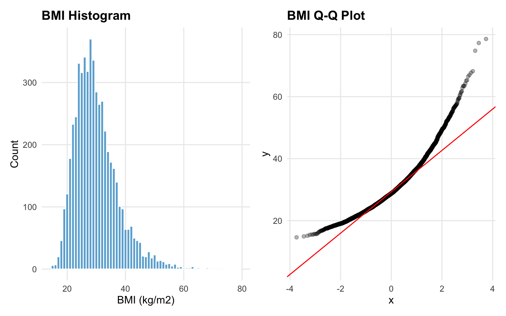
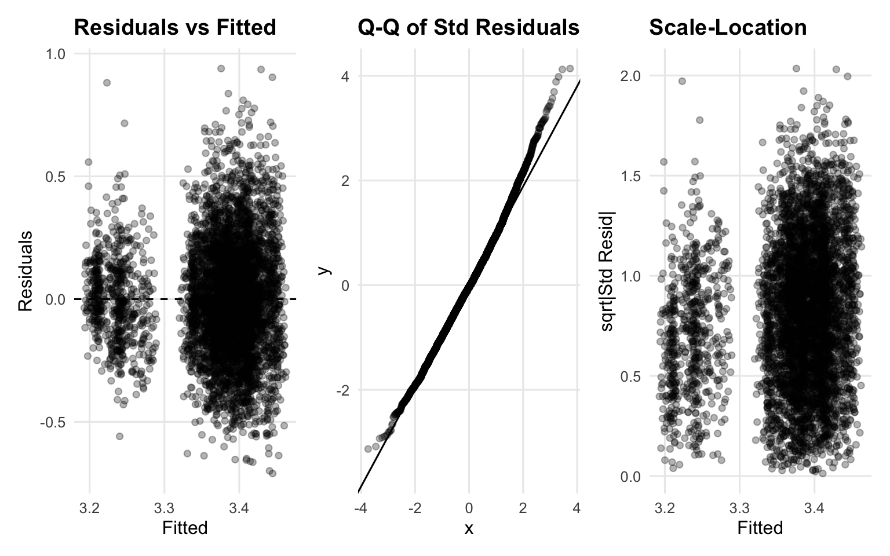
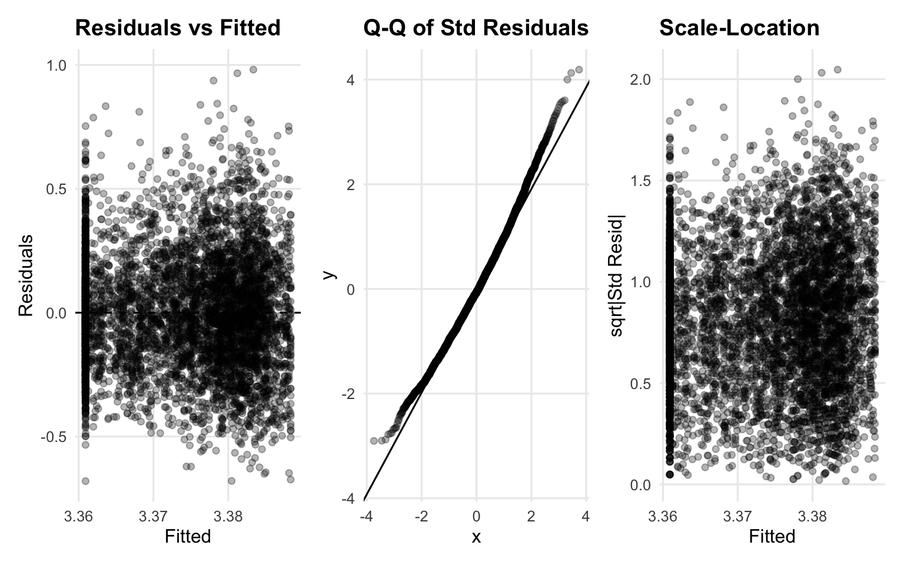
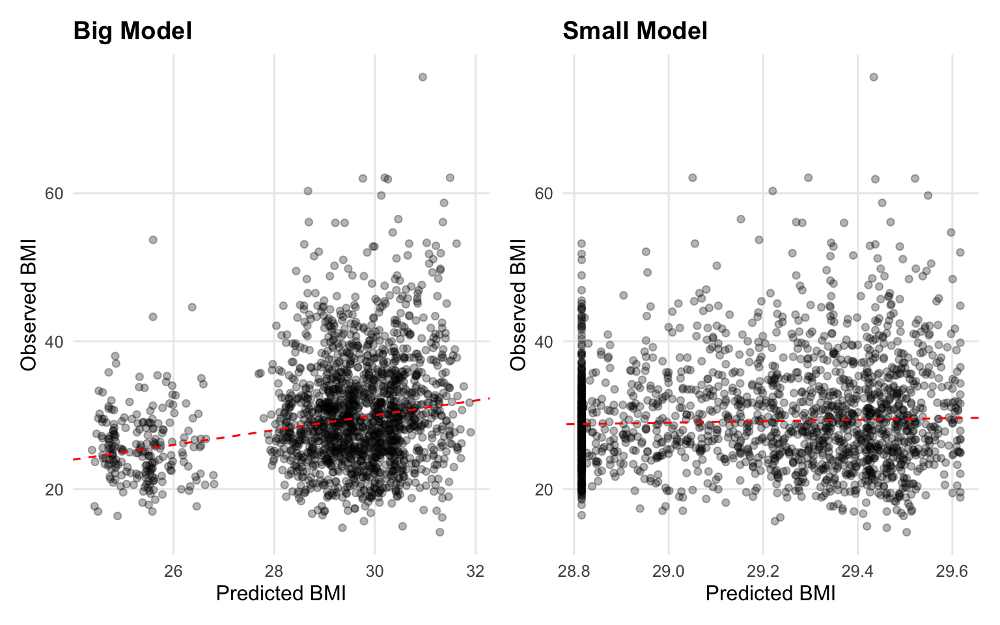
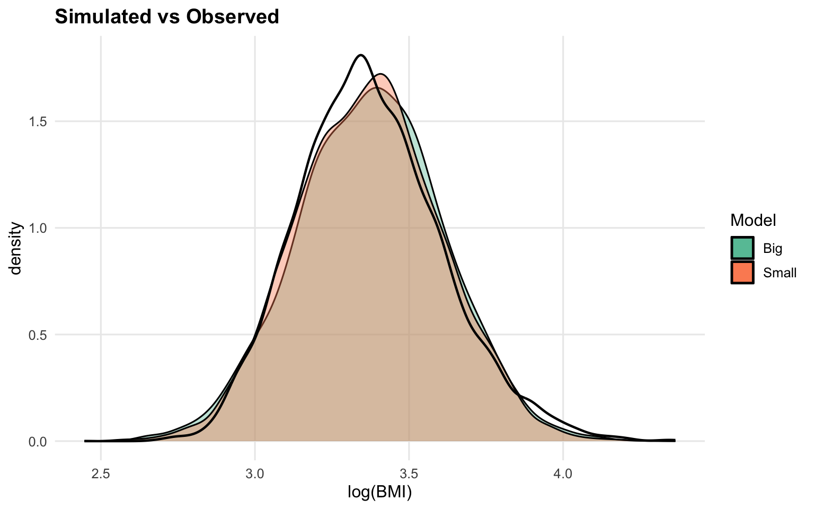

BMI Histogram & Q-Q Plot

| Item | Detail |
|---|---|
| Data source | NHANES 2017-March 2020 (Pre-pandemic) |
| Tables used | P_DEMO, P_BMX |
| Analytic sample | 7,214 adults (age >= 20) |
| Outcome | BMI (kg/m2), log-transformed |
| Key predictor | Income-to-Poverty Ratio (0-5) |
| Train/Test | 75% / 25% split |
| Rendered | 2026-02-24 |
| Item | Detail |
|---|---|
| Question | How well does family income-to-poverty ratio predict BMI, after accounting for age, sex, race/ethnicity, and education? |
| Hypothesis | Higher income expected to link to lower BMI, but this effect is expected to disappear after adjusting for demographic confounders. |
| Finding | After adjustment, income-to-poverty ratio shows no meaningful independent association with BMI. Big model preferred (validated R2 ~0.053 vs ~0.000). |
| Model | Formula | Purpose |
|---|---|---|
| Big | log(BMI) ~ income_ratio + age + sex + race_eth + education | Full model - all predictors |
| Small | log(BMI) ~ income_ratio | Naive baseline - key predictor only |
| Metric | Big | Small |
|---|---|---|
| RMSPE | 7.286 | 7.474 |
| MAPE (%) | 18.130 | 18.733 |
| Max AE | 44.747 | 46.266 |
| Validated R2 | 0.053 | 0.004 |

| Variable | Mean | SD | Min | Median | Max |
|---|---|---|---|---|---|
| bmi | 30.04 | 7.46 | 14.2 | 28.80 | 78.6 |
| income_ratio | 2.60 | 1.62 | 0.0 | 2.22 | 5.0 |
| ridageyr | 50.78 | 17.42 | 20.0 | 52.00 | 80.0 |
| Term | Estimate | SE | 90% CI Low | 90% CI High | p-value |
|---|---|---|---|---|---|
| (Intercept) | 3.3697 | 0.0145 | 3.3458 | 3.3936 | 0.0000 |
| income_ratio | 0.0036 | 0.0022 | -0.0001 | 0.0072 | 0.1072 |
| ridageyr | 0.0002 | 0.0002 | -0.0001 | 0.0005 | 0.3245 |
| sexFemale | 0.0301 | 0.0062 | 0.0199 | 0.0403 | 0.0000 |
| race_eth2 | -0.0284 | 0.0136 | -0.0508 | -0.0060 | 0.0370 |
| race_eth3 | -0.0410 | 0.0111 | -0.0593 | -0.0227 | 0.0002 |
| race_eth4 | 0.0040 | 0.0114 | -0.0147 | 0.0227 | 0.7234 |
| race_eth5 | -0.1694 | 0.0134 | -0.1915 | -0.1473 | 0.0000 |
| race_eth6 | -0.0232 | 0.0171 | -0.0514 | 0.0049 | 0.1751 |
| educationHS Grad | 0.0130 | 0.0100 | -0.0035 | 0.0296 | 0.1942 |
| educationSome College | 0.0266 | 0.0098 | 0.0105 | 0.0427 | 0.0066 |
| educationCollege Grad | -0.0158 | 0.0112 | -0.0342 | 0.0026 | 0.1581 |
| Term | Estimate | SE | 90% CI Low | 90% CI High | p-value |
|---|---|---|---|---|---|
| (Intercept) | 3.3883 | 0.006 | 3.3784 | 3.3983 | 0.0000 |
| income_ratio | -0.0055 | 0.002 | -0.0087 | -0.0023 | 0.0052 |



